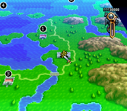
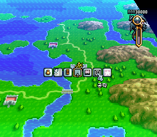
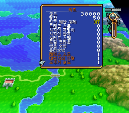
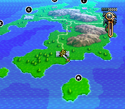
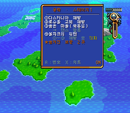

게임 소개
부대를 짜서 월드맵을 실시간으로 진군시키며 도시와 교회를 해방해 가는 시뮬레이션 RPG입니다. 숨겨진 마을·교회, 성향과 평판에 따라 갈리는 동료와 엔딩이 많아 공략 없이 최고 엔딩을 보기 어렵습니다. 이 패치는 이미 나와 있는 한마루 한글판 위에 치트와 공략을 게임 메뉴로 더합니다. 한글 번역 자체는 한마루의 작업입니다.
- 원작
- 전설의 오우거 배틀 (クエスト, 슈퍼패미컴)
- 발매
- 1993년 3월 12일 (일본)
- 장르
- 시뮬레이션 RPG
- 바탕
- 한마루 한글판 (2MB 롬)
치트 메뉴
월드맵에서 X 버튼 메뉴의 아이콘 줄 맨 오른쪽에 「공략」「치트」가 있습니다. ←→로 값을 바꾸고 L·R로 크게 바꾸며, B로 나옵니다.
| 골드 | 0 ~ 99,999,999 |
|---|---|
| 평판 | 0 ~ 100 |
| 전직 제한 해제 | ON이면 ALI·CHA와 상관없이 레벨만 되면 모든 직업으로 전직 |
| 변신 아이템 | 7종 개수 설정: 드래곤 스톤, 사자의 지팡이, 사자의 반지, 블러드 스펠, 드림 크라운, 썩은 호박, 유리호박 |
메뉴 아이콘은 게임 구조상 최대 8칸입니다. 정복한 마을처럼 원래 항목이 7개인 곳에서는 「공략」만 나오고, 치트는 공략 화면에서 X로 들어갑니다.
공략 메뉴
- 지금 스테이지에서 할 일을 ①②③… 순서로 보여 줍니다. 기준은 최고 엔딩 분기입니다.
- 같은 번호가 월드맵의 그 위치에 표시됩니다. ★는 숨겨진 보물·특수 지점(카오스 게이트 포함), ?는 숨겨진 마을·교회입니다.
- A로 지도 번호 표시를 켜고 끄며, X로 치트 화면으로 넘어갑니다.
- 수록: 스테이지 1~22, 재나듀, 제테기네아, 샤리아, 무스펠름, 오르가나, 시굴드, 안탄질
공략 출처: VGR 공략, Ogre Battle Saga Wiki, RetroAchievements 가이드. 지명과 아이템 이름은 한글판 게임 화면에서 확인한 표기를 따랐습니다.
화면






적용 방법
한마루 한글판 롬 준비
한마루 한글 패치를 적용한 롬을 준비합니다. 헤더 있는 롬은 2,097,664바이트(CRC32
9EF098AA), 헤더 없는 롬은 2,097,152바이트(CRC32C998C92C)입니다.맞는 패치 받기
롬 크기에 맞춰 아래에서 고릅니다. 헤더 있는 롬(보통 .smc)은 「헤더 있음」, 헤더 없는 롬(보통 .sfc)은 「헤더 없음」입니다.
패치 적용
RomPatcher.js(웹)나 Floating IPS(PC)로 적용합니다. 결과 롬 CRC32는 헤더 있음
0C9317AA, 헤더 없음5BFB462C입니다.실행
Snes9x 같은 에뮬레이터에서 실행합니다. 한글판에서 쓰던 세이브를 그대로 이어서 쓸 수 있습니다.
이 IPS는 한마루 한글판 롬용입니다. 일본판 원본에는 맞지 않습니다.
알려진 문제
- 7스테이지(제노비아 슬럼): 바이로이트 마을의 위치를 확인하지 못해 지도 번호 없이 공략 글로만 안내합니다.
- 보너스 스테이지 드래곤즈 헤븐(새 게임 이름 FIRESEAL)은 「공략 정보 없음」으로 나옵니다.
- 영웅의 별·진주·플래티넘 메달 등 일부 아이템은 한글판 이름을 확인하지 못해 일반 표현으로 적었습니다.
바뀐 점
- 메시지창 앞부분 글자가 빠지던 문제 수정 (「이동시킬 지점에…」, 「소지 하겠습니까?」)
- 정복한 마을 메뉴에서 치트 아이콘이 잘리던 문제 수정 — 자리가 없으면 공략 화면에서 X로 치트 진입
- 시점 이동이나 창을 닫은 뒤 지도 번호가 한동안 사라지던 문제 수정
- 공략 보완: 7스테이지 영광의 열쇠·가넷·흰개미 교회, 11스테이지 보세텐 위치, 보스 성 이름
- 아이템 이름을 한글판 게임 표기로 통일
- 치트 메뉴, 공략 메뉴와 지도 번호 표시 추가
공략 화면 글꼴: 갈무리(Galmuri) — SIL Open Font License. 어셈블러: Asar.